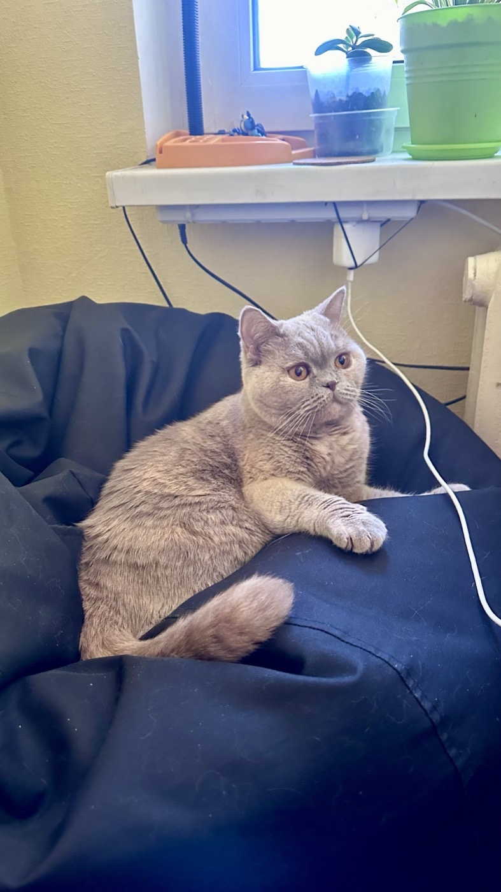
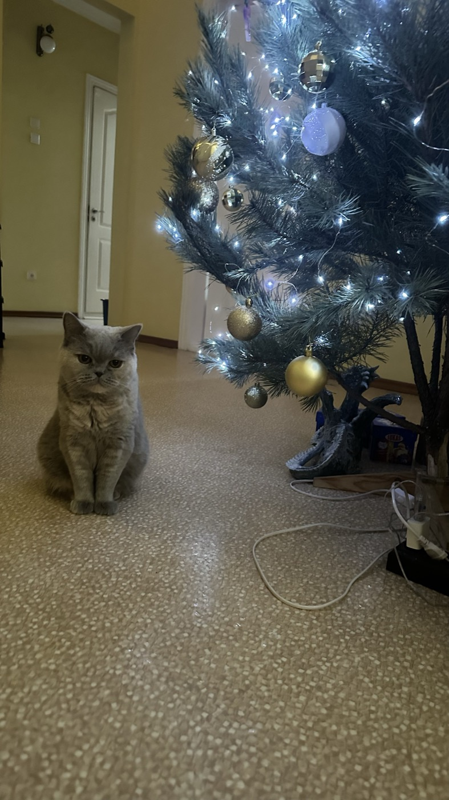
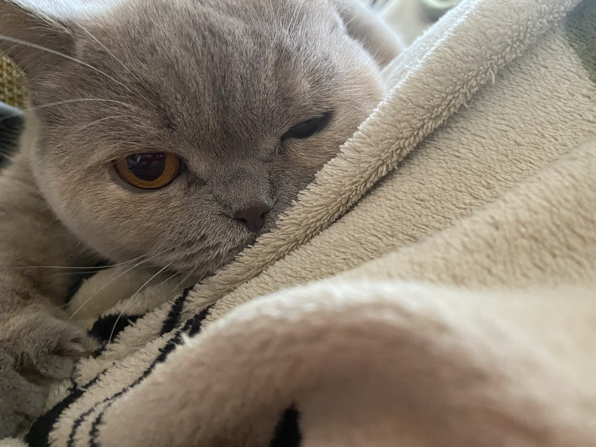
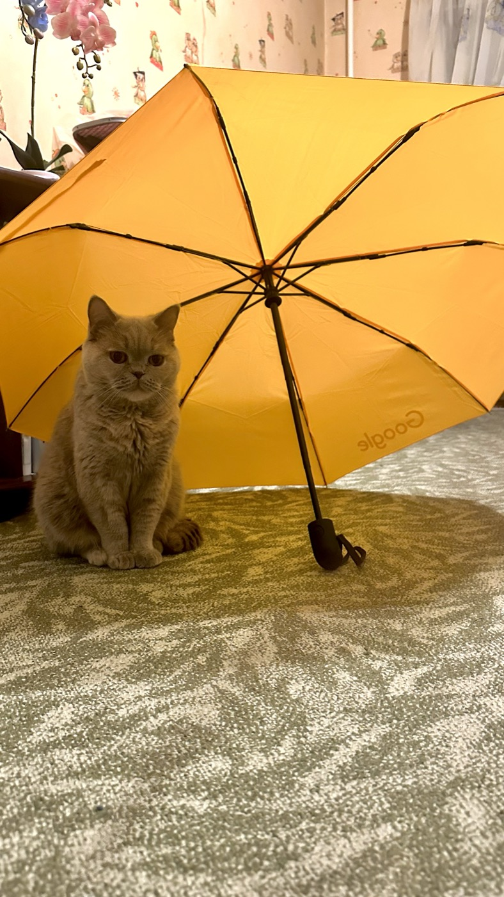
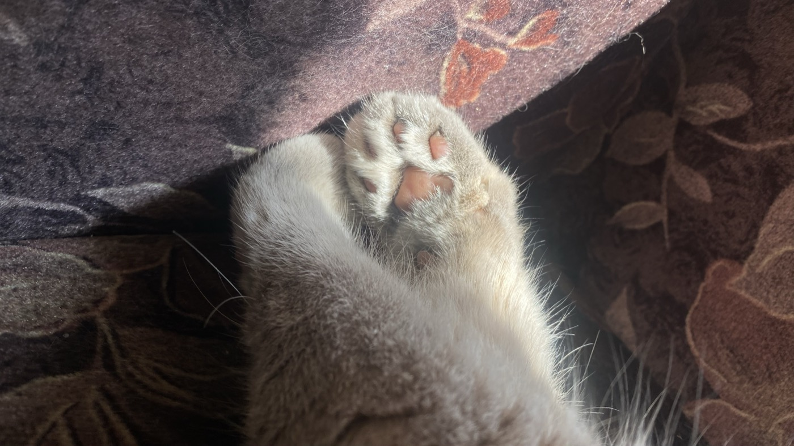
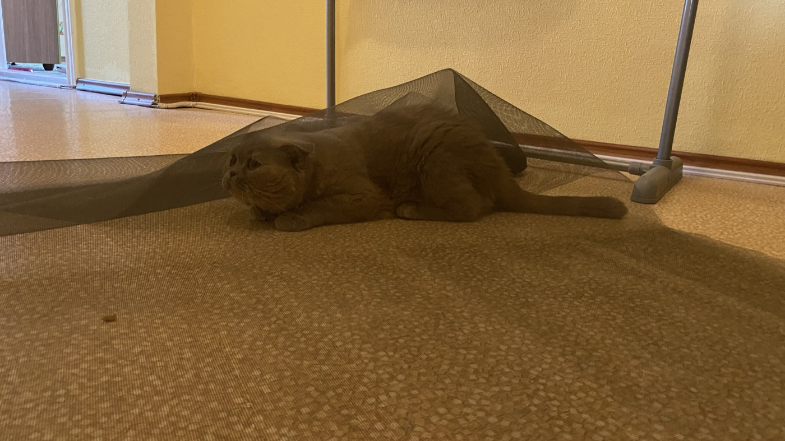
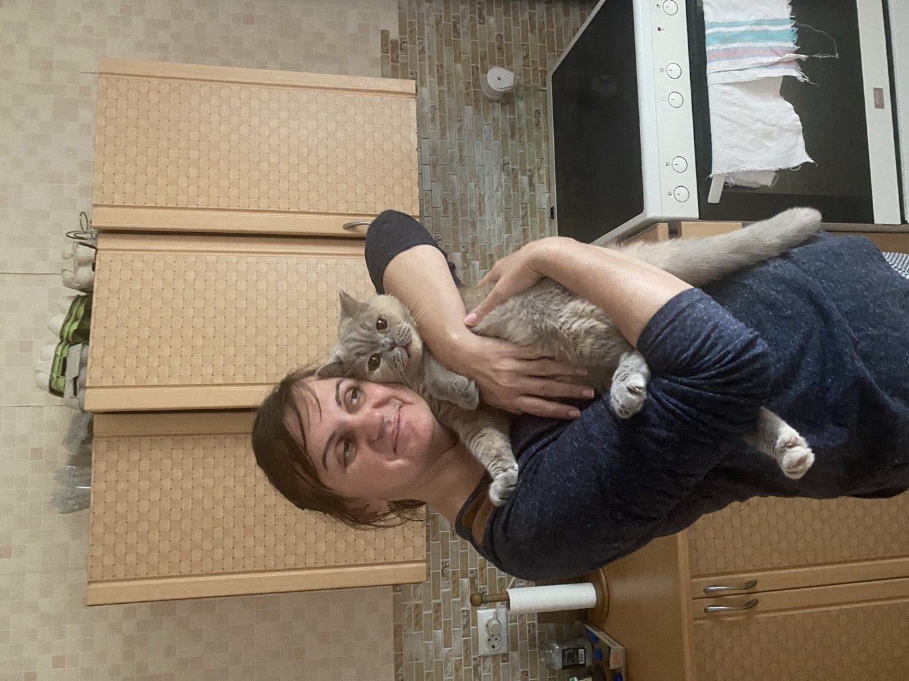

💙
Характер
Спокойная и величавая, но по вечерам превращалась в маленький ураган, гоняющий мячик по всей квартире.
Британская короткошёрстная · пушистое чудо
Маленькая королева с плюшевыми щеками и характером льва. Здесь мы храним самые тёплые воспоминания о ней.
Читать воспоминания
Боня — настоящая британка: серо-голубая шубка, круглые янтарные глаза и знаменитая «недовольная» мордочка, за которой пряталось самое доброе сердце.
Спокойная и величавая, но по вечерам превращалась в маленький ураган, гоняющий мячик по всей квартире.
Контролировать процесс готовки на кухне и требовать свою законную порцию курочки ровно в 18:00.
Тёплый плед у окна, откуда открывался лучший вид на птиц и проходящих мимо соседских собак.
Каждая мордочка — отдельная история.








Крошечный пушистый комочек, который умещался на ладони и сразу замурлыкал.
Ёлка была объявлена личной игрушкой. Ни один шарик не устоял.
Боня выбрала себе трон и с тех пор делила его с нами очень неохотно.
Мурчание под пледом, которое лечило любой тяжёлый день.
«Она всегда знала, когда мне грустно, и приходила греть своим мурчанием.»
«Боня встречала у двери каждый вечер — важная, как настоящая хозяйка дома.»
«Её плюшевые щёки и серьёзный взгляд невозможно забыть.»
Спасибо тебе, Боня, за каждый мурлыкающий момент. Ты навсегда в наших сердцах. 💙